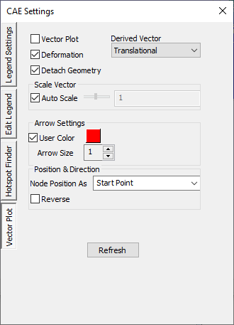
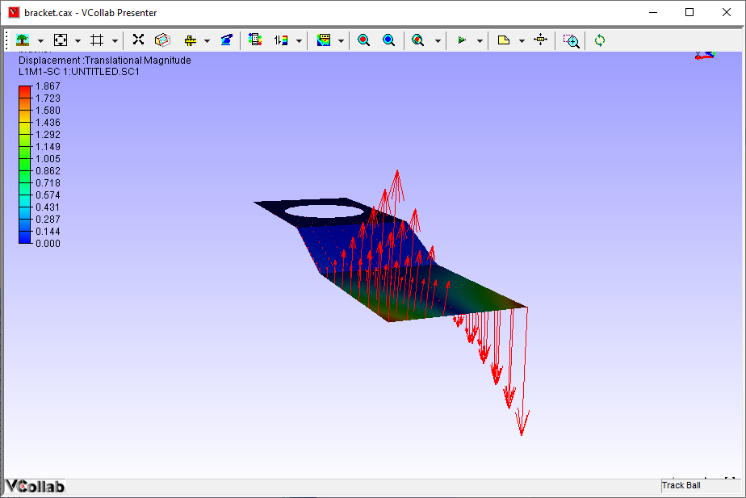
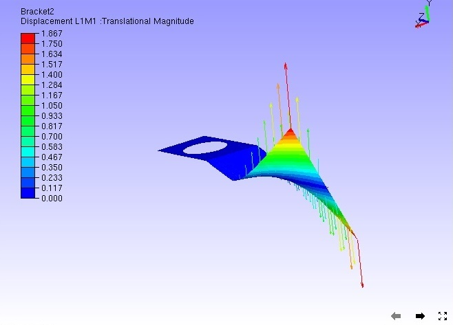
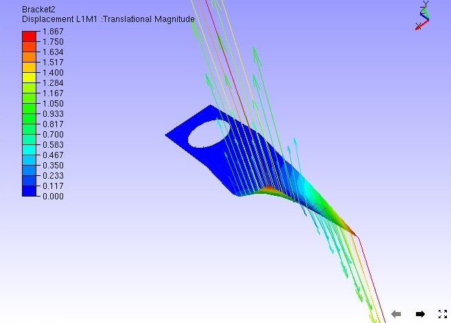
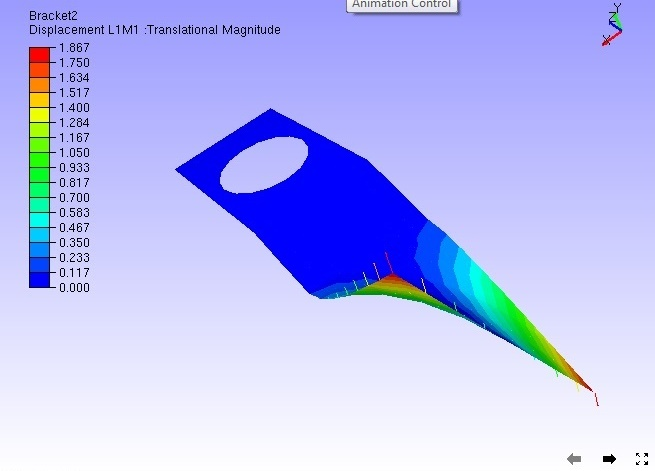
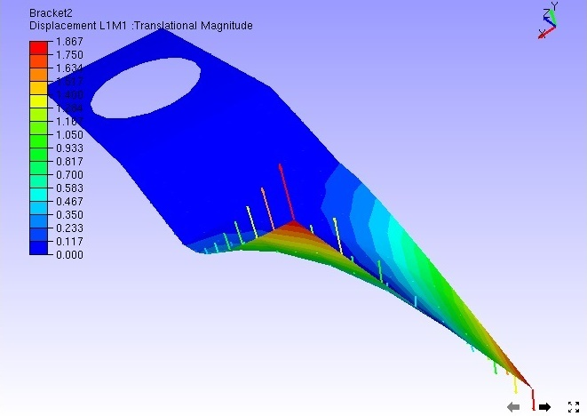
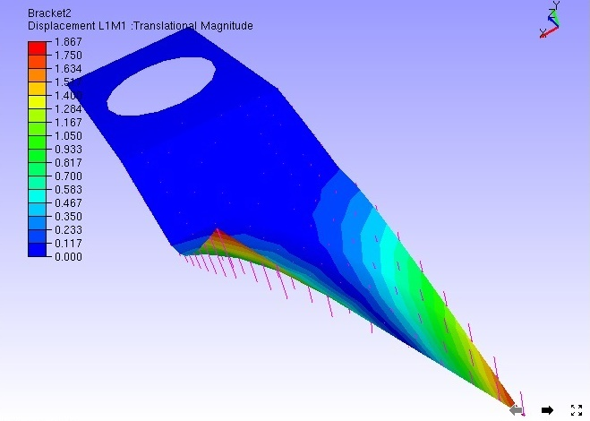
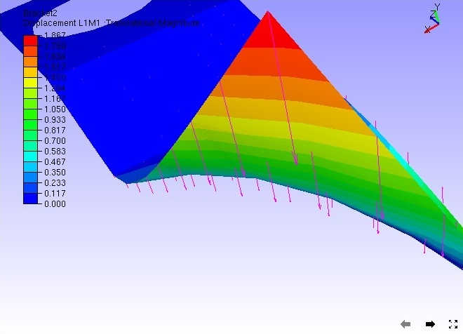

Display Vector Plot
The Vector Plot display option plots vectors for CAE vector type results.
- VCollab saves one user color for vector plot in view point as well as in CAX. Full tensor derived type may require 3 user colors at most.
Steps to view and set up Vector Plot
Click CAE | Display | Vector Plot
Or
Click CAE Settings | Vector Plot.


Auto scale helps users to view very huge vectors as well as very small ignorable changes inside the viewer.
- Click CAE | CAE Settings| Vector Plot to modify vector plot setup.
- By default, Auto Scale is enabled.
- Uncheck Auto Scale to scale manually using slider control.
- Click the Deformation option to plot the vector with instance and motion of model.

- Slider bar is always positioned at the center of the slider unless the user moves.
- To scale up, move the slider right side. Slider bar comes to the center once the user releases the mouse button.

- To scale down, move the slider to the left.

- Users have no constraints to scale up or down. They can enter an exact scale value in the edit box at the end of the slider and apply the same.
- Use the Arrow Size option to increase the size of the arrow.

- Click User Color to enable the color box
- Click the color box with default white color to open up the color palette.
- Choose a color and click Ok to apply the color on to the vector plot.

- By default vectors are starting from nodal positions. If necessary, make the vectors end at nodal positions by selecting Nodal Position As option as End point.

- Check Reverse option to reverse the direction of vectors if necessary.

- Select Rotational option in the derived vector type

- Select Both option in derived vector type which shows rotational as well as translational.